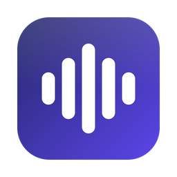

Smart Transcript Cleanup
Strips filler words, removes stutters and false starts, joins sentences split at pauses, and formats spoken lists automatically.

Talksify GitHub ↗Press a shortcut, speak, press it again. Talksify transcribes your voice and cleans up false starts and punctuation. 25 European languages supported.
Strips filler words, removes stutters and false starts, joins sentences split at pauses, and formats spoken lists automatically.
Press Ctrl + Option + Space in any editor, terminal, browser, or chat window to dictate directly into the focused input.
Bulgarian, Croatian, Czech, Danish, Dutch, English, Estonian, Finnish, French, German, Greek, Hungarian, Italian, Latvian, Lithuanian, Maltese, Polish, Portuguese, Romanian, Russian, Slovak, Slovenian, Spanish, Swedish, and Ukrainian.